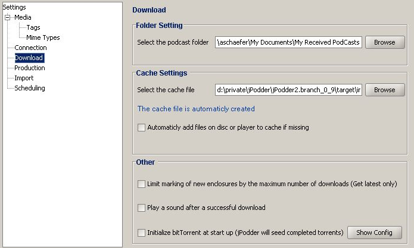

Allows you to select the folder where the enclosures are put, the location of the cache and some other settings regarding downloading enclosures.

The Download view contains these fields:
| Select the podcast folder | The folder where jPodder will store the downloaded enclosures |
| Select the cache file | Lets you choose the file (and its location) |
| Automacticly add files ... | if checked jPodder will automaticly add files found on disc or player add to its cache |
| Limit marking of new ... | if checked jPodder will limit the marking of new enclosures to the last one |
| Play sound after ... | if checked jPodder will play a sound after a successful download |
| Initialize bitTorrent at ... | if checked jPodder will initialize when application is started |